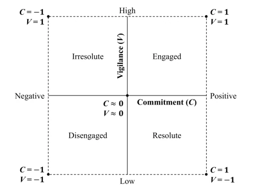
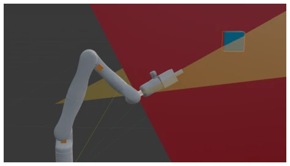
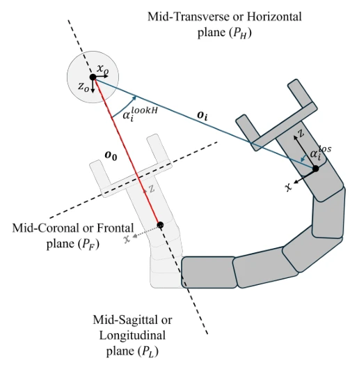
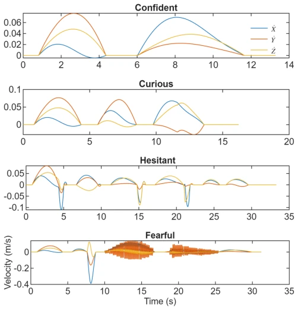
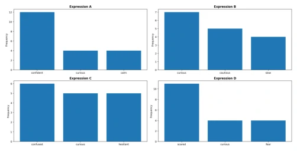
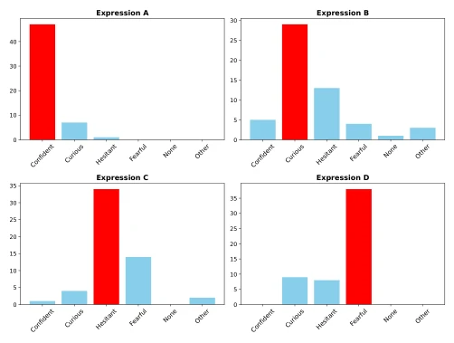
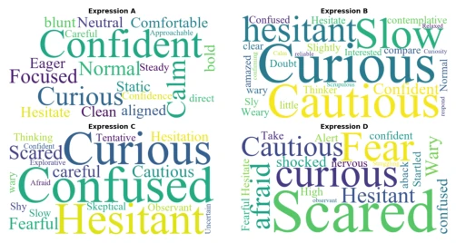
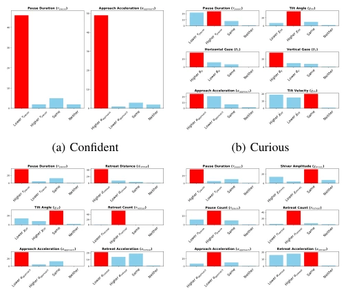

This paper attempts to "paint" uncertainty onto cold robotic arms using Laban Movement Analysis (LMA), adding a bit of "acting" to embodied intelligence. The core contribution maps perception uncertainty to the Commitment-Vigilance space, then decomposes it into five motion primitives. The highlight lies in quantifying the motion characteristics of "hesitation" and "fear", such as tremor amplitude and pause count, providing interpretable motion encoding for HRI. But there are also many drawbacks: relying on preset LMA rules rather than end-to-end learning, generalizability is questionable; experiments are based solely on video viewing, lacking real physical interaction verification; although the 11 descriptors are comprehensive, is the computational complexity friendly to real-time systems? Additionally, simplifying complex uncertainty into five discrete states may lose the nuances of continuous changes. In short, it is an interesting attempt in the HRI field, proving that motion can convey states, but there is still a distance from truly "understanding human hearts" and autonomous generation, more like a design guide than a general algorithm.
Robots often face perception uncertainty in collaboration, but traditional methods only focus on internal state estimation, ignoring the need to communicate this state to humans [1], [2]. Existing expressive motion research mostly maps discrete emotions or goals [8], [9], [10], lacking a unified mathematical decomposition for uncertainty states. Although hesitation has been studied, it is mostly treated as a binary condition or specific gesture, unable to distinguish fine-grained states such as confidence, curiosity, and fear. Additionally, existing methods often treat uncertainty as probability values or failure warnings [16], [17], rather than conveying it through motion quality. This paper aims to fill this gap, establishing a structured mapping from perception uncertainty to motion behavior, enabling robots to convey internal states through motion quality rather than relying solely on path geometry.
方法Method
整体框架基于 Laban Movement Analysis (LMA)。首先将 LMA 的 Effort 因子（Weight, Time, Space, Flow）投影到正交的 Commitment (C) 和 Vigilance (V) 二维空间，定义置信、好奇、犹豫、恐惧、静止五种状态。C 轴锚定 Near 状态，V 轴锚定 Remote 状态，通过公式计算得出。接着，将状态映射为五种运动原语：Approach（接近）、Pause（停顿）、Retreat（后退）、Exploration（探索）、Oscillation（振荡）。最后，通过 11 个运动描述符参数化轨迹，包括加速度、停顿计数、回撤距离、注视角度、倾斜角及颤抖幅度等。这些描述符可实时从关节编码器数据计算，实现了从感知状态到可观测运动的可计算转换。该方法将抽象的感知不确定性转化为具体的运动参数，支持自主轨迹生成。
The overall framework is based on Laban Movement Analysis (LMA). First, the LMA Effort factors (Weight, Time, Space, Flow) are projected onto an orthogonal Commitment (C) and Vigilance (V) two-dimensional space, defining five states: confidence, curiosity, hesitation, fear, and stillness. The C axis anchors the Near state, the V axis anchors the Remote state, derived through formulas. Next, the states are mapped to five motion primitives: Approach, Pause, Retreat, Exploration, Oscillation. Finally, trajectories are parameterized through 11 motion descriptors, including acceleration, pause count, retreat distance, gaze angle, tilt angle, and tremor amplitude, etc. These descriptors can be calculated in real-time from joint encoder data, achieving a computable conversion from perception states to observable motion. This method transforms abstract perception uncertainty into concrete motion parameters, supporting autonomous trajectory generation.

Fig. 1: Commitment-Vigilance state space with robot beha- vior classes and states expressing perceptual uncertainty.

Fig. 2: A robotic manipulator in a goal-directed task. The blue cube represents the target object. The horizontal (yellow) and longitudinal (red) planes represent the mid- transverse and the mid-sagittal planes of the end effector, respectively.

Fig. 3: Geometric parameters of robot end effector with respect to the object vector o ∈R3 at poses 0 (o0) and i (oi) to define the expressive descriptors of robot motion for perceptual uncertainty.
A video-based human subject study was conducted. The task was robotic arm approaching a target. Four baseline trajectories (confidence, curiosity, hesitation, fear) and descriptor variants were designed. 55 valid questionnaires. Results show participants could significantly distinguish the four states (p < .001). Descriptor modifications significantly affected perceived intensity, e.g., shorter pauses increased confidence, longer pauses increased fear. Some descriptors like tremor amplitude had low distinction in fear. This proves that motion parameterization can effectively encode uncertainty. Additionally, the study verified the modulation effects of different descriptors on intensity, providing parameter basis for subsequent generation algorithms.

Fig. 4: Velocity profiles of the base trajectories of the robotic manipulator during the goal-directed task in the user studies.

Fig. 6: Top 3 words used by participants to describe the descriptor-modulated expressive trajectories (A: Confident, B: Curious, C: Hesitant, and D: Fearful).

Fig. 7: Behaviors assigned by participants for the descriptor- modulated expressive trajectories (A: Confident, B: Curious, C: Hesitant, and D: Fearful).

Fig. 5: Words used by participants to describe the descriptor- modulated expressive trajectories (A: Confident, B: Curious, C: Hesitant, and D: Fearful).

Fig. 8: Kinematic variables explored across the four mental states: (a) Confident, (b) Curious, (c) Hesitant, and (d) Fearful.